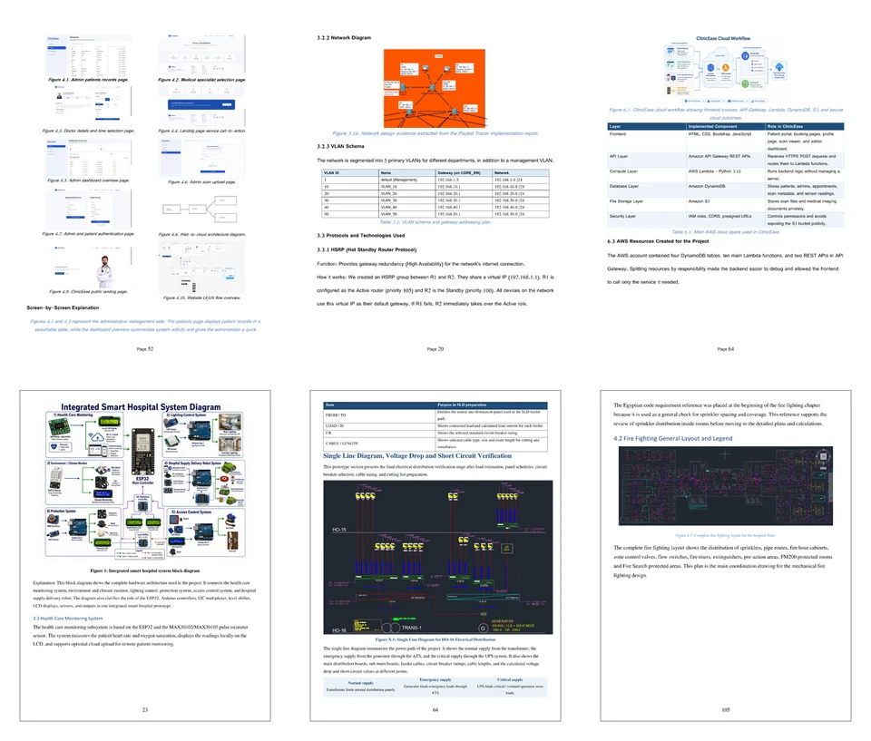
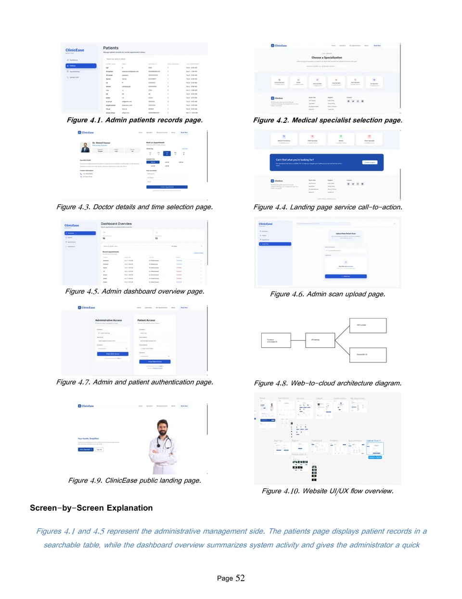
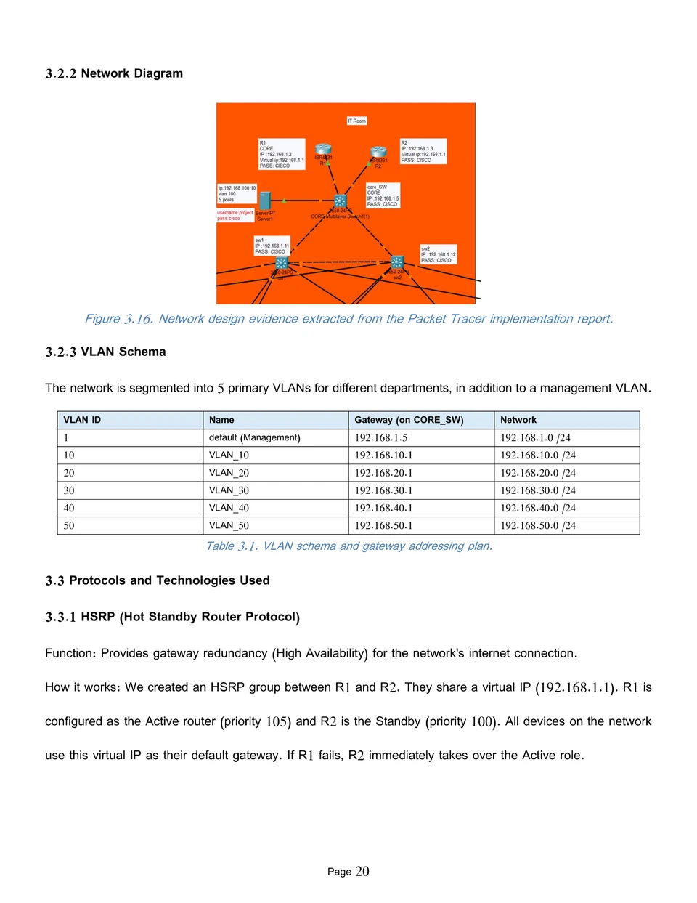
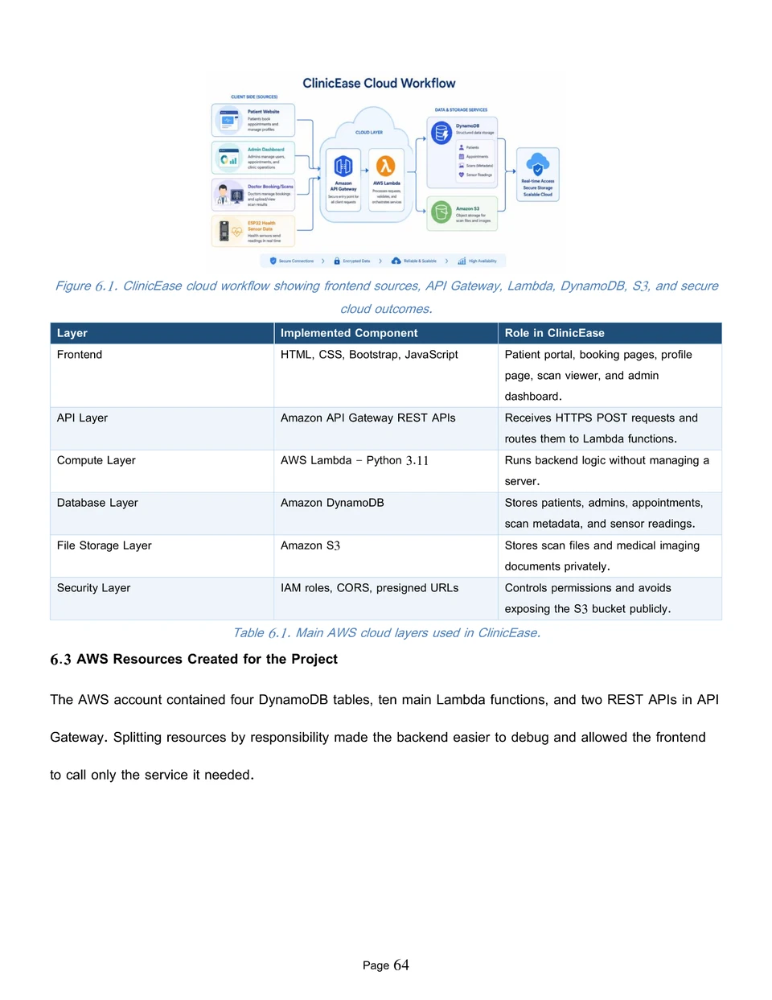
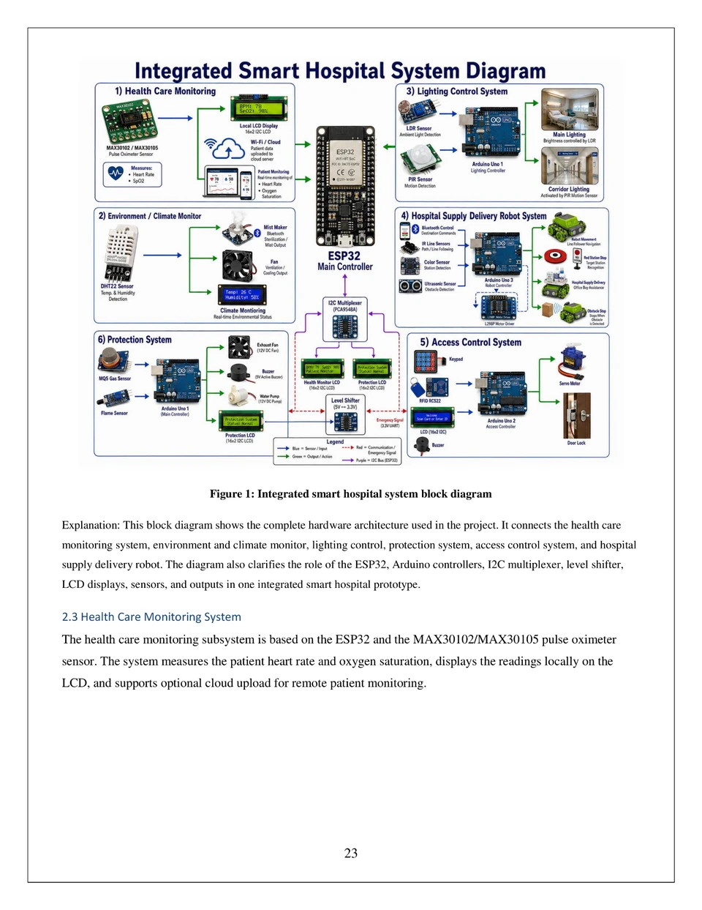
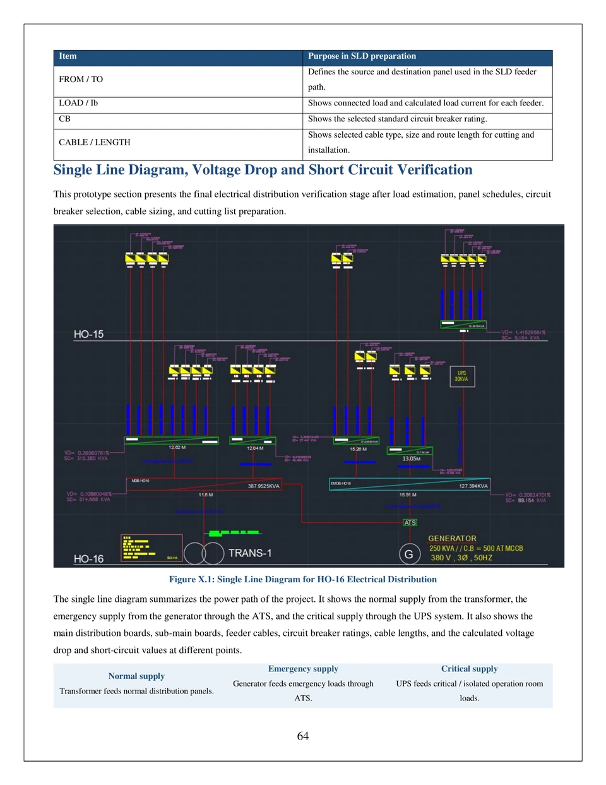
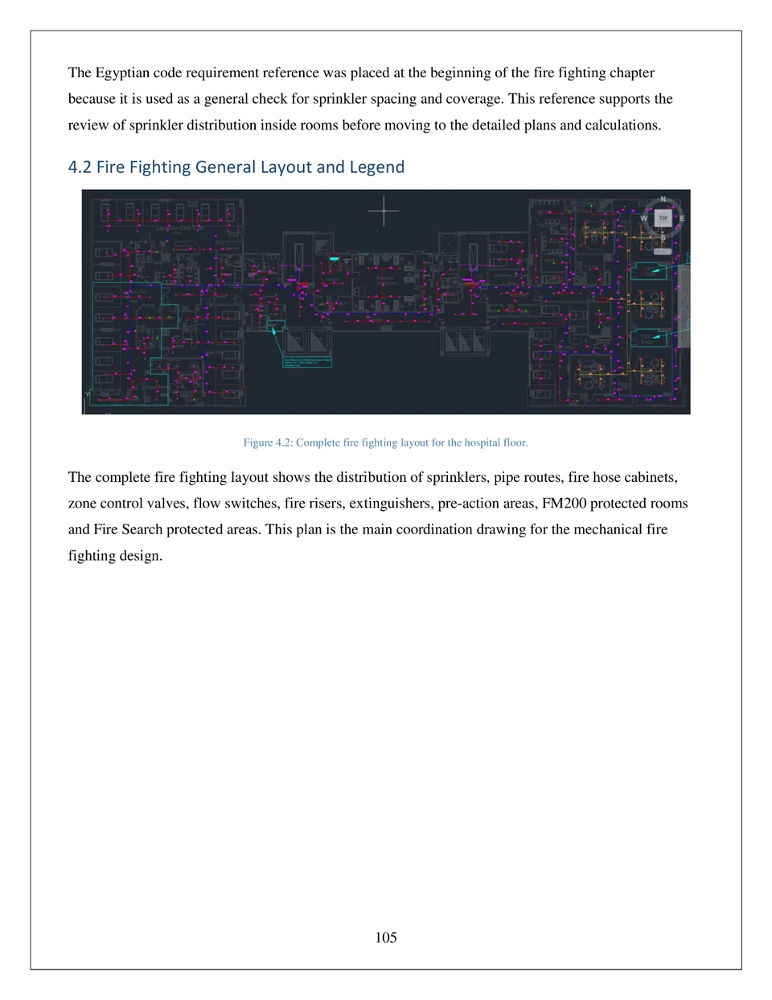

Graduation Project / Engineering Services Company Prototype
Integrated Engineering Solutions
Integrated Engineering Solutions is a graduation project prototype for an engineering services company. The smart hospital was used as a realistic case study to demonstrate the services the company can sell, design, and implement for healthcare clients.
The project is not presented as a hospital product itself. It showcases a complete service package applied to a hospital model, combining electrical distribution, fire fighting and safety systems, network infrastructure, website and mobile interfaces, cloud services, and IoT-based monitoring.
- Service-company prototype showing end-to-end engineering solutions for healthcare facilities.
- Hospital network design service with VLANs, redundancy, DHCP, SSH, wireless connectivity, and security features.
- Healthcare web system service with patient booking flow, service pages, and admin dashboard interfaces.
- Electrical distribution, fire fighting design, cloud architecture, and IoT automation as integrated services.
Cisco Packet TracerHTMLCSSJavaScriptBootstrapAWSDynamoDBArduino/ESP32






